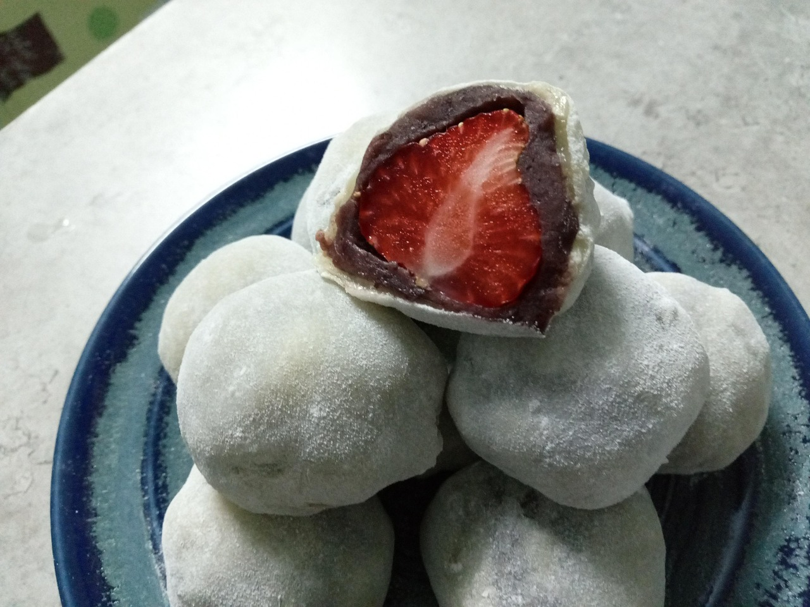
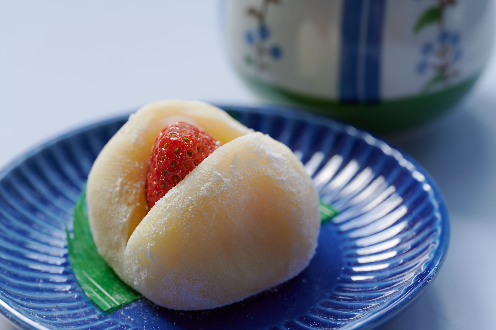
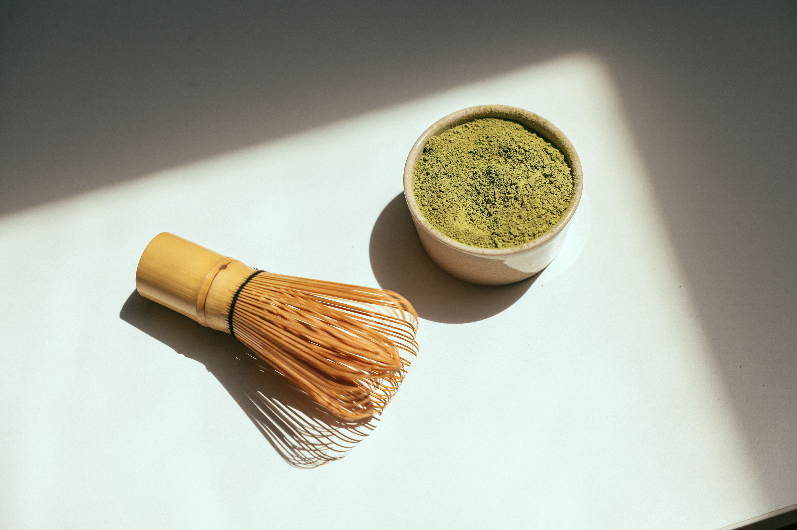

Coberta de mochi
Daifuku
Una coberta de mochi amb un farciment dolç a dins. L’anko i la maduixa són dues de les opcions.

El mochi i el farciment
El daifuku porta una capa de mochi, feta amb farina d’arròs, que recobreix el farciment. A Ochiai en preparen amb anko, una pasta dolça de mongeta vermella.
També n’hi ha amb maduixa. Quan els talles, es veu la fruita al mig, sota la capa de mochi.
La variant de matxa
El de matxa d’Ochiai porta anko de mongeta blanca a dins. La matxa s’hi afegeix en pols per fora.
Fonts consultades Daifuku Anko i Daifuku Matcha, de la pastisseria Ochiai.
El dolç en imatges
Selecciona una fotografia per ampliar-la. Pots passar-les amb les fletxes i tancar amb Esc.



Daifuku amb maduixa
Recetas Japonesas prepara un daifuku amb maduixa i anko, conegut com a ichigo daifuku.
Vídeo de Recetas Japonesas en castellà, amb subtítols automàtics. Obre la demostració de daifuku a YouTube.
Una maduixa al centre
L’anko envolta la maduixa i el mochi cobreix el conjunt. La massa es cou al microones i es treballa amb midó perquè no s’enganxi. En ajuntar-ne les vores, la fruita queda tancada a dins.